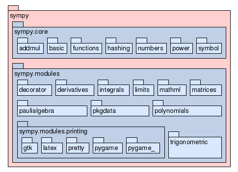

Package sympy
source code
Computer Algebra System (CAS) in Python
Sympy is a symbolic manipulation package, written in pure Python.
Its aim is to become a full featured CAS in Python, while keeping the
code as simple as possible in order to be comprehensible and easily
extensible.
Features
Currently, Sympy has only around 1600 lines of code (including
comments) and its capabilities include:
-
basic arithmetics *, /, +, -
-
basic simplification (like a*b*b + 2*b*a*b -> 3*a*b^2)
-
expansion (like (a+b)^2 -> a^2 + 2*a*b + b^2)
-
functions (exp, ln, sin, cos, tan, ...)
-
differentiation
-
integration (currently it can do only very simple integrals)
-
taylor series
-
basic substitution (like x-> ln(x))
-
arbitrary precision integers and
-
rationals
-
standard (python) floats
-
complex numbers (currently only simple things)
-
limits
To help you get started, here is a simple example in the python
interpreter:
>>> from sympy import Symbol, cos
>>> x = Symbol('x')
>>> e = 1/cos(x)
>>> print e.series(x,10)
1+50521/3628800*x^10+61/720*x^6+1/2*x^2+5/24*x^4+277/8064*x^8
For full documentation, see the docs at our web page: http://code.google.com/p/sympy/wiki/Documentation
Structure
Sympy is basically divided in two modules: the core module, which
contains the classes needed for basic symbolic manipulations, like the
definition of Symbol or Rational number, and a some high-level modules,
that are responsable for high-level work done with sympy: limits,
integration, solving, etc., and is the one you will have to look at if
you are searching for examples on how to extend sympy
|

|
|
Package Tree for sympy
|